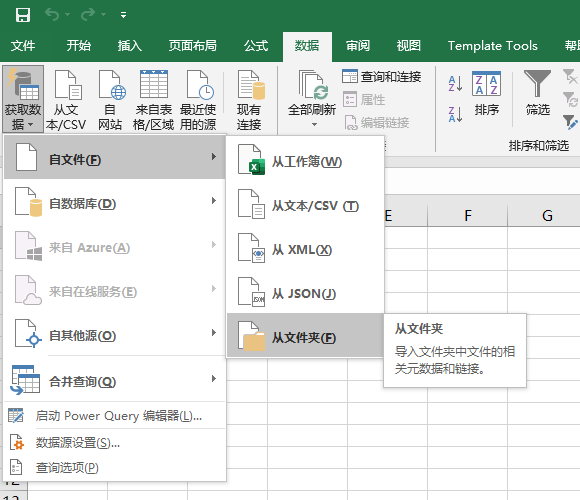

- 00 导读 入门Python的必备知识.md.html
- 00 开篇词 重复工作这么多，怎样才能提高工作效率？.md.html
- 01 拆分与合并：如何快速地批量处理内容相似的Excel？.md.html
- 02 善用Python扩展库：如何批量合并多个文档？.md.html
- 03 图片转文字：如何提高识别准确率？.md.html
- 04 函数与字典：如何实现多次替换.md.html
- 05 图像处理库：如何实现长图拼接？.md.html
- 06 jieba分词：如何基于感情色彩进行单词数量统计？.md.html
- 07 快速读写文件：如何实现跨文件的字数统计？.md.html
- 08 正则表达式：如何提高搜索内容的精确度？.md.html
- 09 扩展搜索：如何快速找到想要的文件？.md.html
- 10 按指定顺序给词语排序，提高查找效率.md.html
- 11 通过程序并行计算，避免CPU资源浪费.md.html
- 12 文本处理函数：三招解决数据对齐问题.md.html
- 13 Excel插件：如何扩展Excel的基本功能？.md.html
- 14 VBA脚本编程：如何扩展Excel，实现文件的批量打印？.md.html
- 15 PowerShell脚本：如何实现文件批量处理的自动化？.md.html
- 16 循环与文件目录管理：如何实现文件的批量重命名？.md.html
- 17 不同操作系统下，如何通过网络同步文件？.md.html
- 18 http库：如何批量下载在线内容，解放鼠标（上）？.md.html
- 19 http库：如何批量下载在线内容，解放鼠标（下）？.md.html
- 20 不同文件混在一起，怎么快速分类？.md.html
- 21 SQLite文本数据库：如何进行数据管理（上）？.md.html
- 22 SQLite文本数据库：如何进行数据管理（下）？.md.html
- 23 怎么用数据透视表更直观地展示汇报成果？.md.html
- 24 条形、饼状、柱状图最适合用在什么场景下？.md.html
- 25 图表库：想要生成动态图表，用Echarts就够了.md.html
- 26 快速提取图片中的色块，模仿一张大师的照片.md.html
- 27 zipfile压缩库：如何给数据压缩&加密备份？.md.html
- 28 Celery库：让计算机定时执行任务，解放人力.md.html
- 29 网络和邮件库：定时收发邮件，减少手动操作.md.html
- 30 怎么快速把任意文件格式转成PDF，并批量加水印？.md.html
- 春节特别放送1 实体水果店转线上销售的数据统计问题.md.html
- 春节特别放送2 用自顶至底的思路解决数据统计问题.md.html
- 春节特别放送3 揭晓项目作业的答案.md.html
- 结束语 和我一起成为10X效率职场人.md.html
- 捐赠
13 Excel插件：如何扩展Excel的基本功能？
你好，我是尹会生。
我们在讲了怎么利用Python优化Excel的输入和计算效率之后，相信你已经知道该怎么使用Python的循环和文件库进行多个文件的处理，怎么使用正则表达式对内容进行查找和替换。
但是有时会因为临时的需求，为了得到查询的结果而进行一次性的表格处理，这时候如果用Python来解决，估计你有一种“杀鸡用牛刀”的感觉，未免小题大做了。
所以在接下来的三节课里，我会利用Excel中自带的插件和更简单的两个脚本工具，来完成这种临时的、简单的重复性任务，让你用更便捷的方式实现办公自动化。
今天这节课呢，我就给你介绍一个在Excel中非常著名的Power Query插件，利用这个插件你可以完成我们经常遇到的数据清理工作。
Power Query的主要用途
我先来介绍一下Power Query这个插件。从它的名字，你应该就能猜到它的主要用途，那就是在查询方面对Excel进行优化。
我所说的查询优化是泛指，它的涵盖范围比较广。为了方便使用Excel统计数据，往往需要在统计数据前去调整Excel表格的格式、内容以及字段类型，这些在Excel中统称为查询操作。
如果能够把新增数据自动更新到已经处理的数据中，还能自动化地按照之前的操作步骤对表格中的数据进行调整，这就是Power Query比手动调整Excel更有效率的地方。
在查询大量数据中，最耗时的就是清理数据工作了，具体来说，就是把需要统计的数据从多个文件进行提取和合并，把不符合统计格式的数据进行自动化处理，最终形成符合数据统计的规范格式。
比如：数据被存储到多个文件里，而你需要把多个文件的内容手动合并到一个Excel中。再比如：Excel中的日期包含了年月日和具体时间，如果要按日期汇总这些数据，那你就需要先把年月日和时间拆分。不方便的是，如果表格里的数据更新了，你就必须要重新再手动拆分一遍。
其实这两个例子，代表了清理数据工作中需要自动化最典型的两个场景，那就是文件导入和格式调整。而Power Query 就是优化这两个主要功能的插件。
那怎么用Power Query来优化呢？你需要掌握三个主要步骤，分别是获取数据、转换和加载。只要是用Power Query来优化Excel的查询，这三个步骤是必须要掌握的。我也再来具体解释一下每个步骤的具体操作。
获取数据，指的是把数据传入Power Query 的过程。通常我们会新建一个工作簿，把Excel打开之后，然后再切换到“数据”选项卡。接着，单击“获取数据”按钮，在下拉菜单中选择“自文件”命令，继续在下一级菜单中选择“从文件夹”命令，通过弹出的“文件夹”对话框，就可以加载文件夹中的所有Excel文件了。具体操作示范如下图。

转换，指的是对数据的清理工作。在这一步，你需要把你加载到Power Query中的数据从文件到sheet，再从sheet到行列依次处理，对合并好的数据再进行添加、删除列、筛选、添加自定义计算等操作。
这一步是把不符合统计需求的数据调整为符合统计需求数据的最主要操作步骤，也是最繁琐的一步。例如把销售代表字段拆分成姓氏和名字，将订单日期的时间字段去掉，就可以使用转换这一操作来完成。
我给你画一幅图，用来帮你直观理解转换前后的变化，图片如下：
第三步是加载，指的是把已经清理和转换的数据返回到Excel中。这一步比较简单，这里我就不多讲了。
讲完了用Power Query优化Excel查询的三个核心步骤，那接下来我就用两个典型案例，来，带你实践一下具体的操作。
如何用Power Query优化Excel的查询
我选用了两个不同的案例，覆盖了我在第一部分所说的文件导入和格式调整这两种最经常需要手动操作的场景，这两个场景就是：
- 把多个文件合并到一个Excel中；
- 把单元格内容调整为统一格式。
那么接下来，我就教你怎么使用Power Query加快手工操作Excel的效率。
把多个文件合并成一个Excel
把多个文件合并成一个Excel表格，是处理大量数据的先决条件。那么涉及到处理大量数据的工作，都要进行合并这一步操作。
像是数据被分成多个文件，每个文件里有多个表的情况，在工作中非常常见。如果数据是按月、按天分成不同的工作簿，合并它们是一件更麻烦的事情。
接下来我就以半年的销售数据表格为例，分7个步骤，来讲解怎么使用Power Query实现多个Excel文件的合并功能。
第一步，获取数据。
通过Excel的“数据选项卡”-“获取数据”-“自文件”-“从文件夹”命令，会弹出一个对话框。此时，你可以选中需要合并的文件夹，这样该文件夹内的所有文件都会被识别出来。
由于每个文件中可能会有不同的表，不能把它们直接合并。因此，我们需要点击“编辑”按钮，进入Power Query编辑界面。
这个界面是Power Query 的主要工作界面，在你需要对多个文件进行自动化批量修改时，都需要通过这个界面来完成操作。同时，这个界面也会把你操作的中间结果显示出来。
我们来从左到右依次看一下界面的内容。由于Power Query的界面较大，我先把左侧和中间的界面放在下图：-
界面的中间会显示导入的文件名称和数量，文件的内容会保存在Content列中。
另外，我要提醒一下，你还应该关注左侧和右侧的提示信息。左侧会显示你进行的多次清理操作，每次清理被称作查询。查询的名字可以在右侧的“查询设置”里进行名称修改，右侧的“应用的步骤”列表还能记录操作历史，如果你认为处理结果不符合期望，那就可以返回上一步，重新调整查询结果。
我把右侧的名称和步骤也贴在下方，供你参考。
第二步，我们需要把工作簿中的数据从Content列中解析出来，并且添加在现有内容的右侧。
在这里，我们可以使用一个公式来添加新的列。你需要切换到“添加列”选项卡，单击“自定义列”按钮，然后在弹出的对话框中输入公式“Excel.Workbook([Content],true) ”, 最后点击确定。
我把添加自定义列的操作图片也放在下方。
可以看到，通过自定义列的功能，你将会在原有表格的基础上再添加新的一列，而这一列的内容是Table，表示文件中所有的表格内容。这里有一点你需要注意的，那就是自定义列的公式需要区分大小写。
第三步，调整每个sheet的每一行。
你需要点击第二步添加“自定义”列右侧的数据展开按钮，然后取消勾选“使用原始列名作为前缀”复选框，并点击确定。如图：
第四步，在调整完行之后，你还需要调整每个文件中要查询的sheet和列，它们也是以复选框的形式为你展示的。
例如我在每个文件只使用了一个sheet，每个sheet中的所有列都需要进行查询，所以我就可以选中所有的sheet和列。我把操作截图贴在下面方便你学习。
选择指定的sheet功能，你可以点击Item列右侧的下拉菜单，勾选需要的sheet。点击确定之后，Power Query编辑器界面就会产生新的列，即“Data”列。
Data列保存了我们在第二步选中的sheet的所有表格，在我们今天的案例中，由于我需要所有的列，因此我就“选择所有列”，并点击“确定”按钮，展开Data列，这样就得到了我需要查询的数据。
第五步，通过上面四个步骤，就可以把所有数据按照你需要的sheet、行、列，导入到Power Query编辑器了。不过这时编辑器界面还有要处理的中间数据，因此我可以通过删除其他列的方式，来删除额外的数据。
具体做法是：使用主页选项卡的“删除列”下拉列表，选择“删除其他列”。我把删除前后的截图贴在下方，供你参考。

第六步，由于处理完数据内容后，Excel的每一列类型会自动变成文本类型，导致最终执行结果显示错误，所以我们还需要继续修改类型。可以看到，我把“订单日期”改为日期时间类型，把销售额改为小数类型。具体修改方式是点击列标题前的类型图标，通过弹出的下拉列表，选择指定的类型，如图所示：
第七步，也是最后一步。我把编辑器的数据保存回Excel中，点击“主页”选项卡上的关闭并下载，这样就实现了把多个文件合并到一个Excel的功能。
通过这个例子，我把Power Query的三个主要处理步骤：获取数据、转换和加载，分解成了具体的七个操作步骤，来编写Power Query的主要流程。这七个步骤其实并不繁琐，并且你要是再细心点儿，就会发现我是把“转换”这一部分拆解成了五个步骤，其他两部分并没有变。
总结来说，相比较Python，Power Query不需要编程就能实现多个文件的合并，操作也更加简单。而且在每一步操作之后，你还能通过图形界面及时观察每一步骤的执行结果，这要比Python更加直观，也比Python更适用于一次性的多文件合并场景。
Power Query不但在获取数据的时候可以实现自动化查询功能，而且在单元格的转换和添加列上，也能实现自动化查询功能。那么接下来我就以拆分列功能为例，给你演示一下Power Query的转换功能是如何实现自动化查询的。
单元格的拆分
拆分列，是自动化查询转换功能时最常用到的选项。例如你在按日期汇总数据时，发现日期这列除了年月日，还包括时间信息，这样就没法按照相同的年月日进行合并，而必须要先对日期单元格进行拆分，拆分之后才能按照年月日这一列汇总数据。
还有，当你需要对销售人员的姓氏、名字分别处理时，也要按照字数对姓名单元格拆开，然后分别处理。
拆分的功能在Excel中也是可以实现的，但是Power Query能够在拆分之后，对新导入的文件也能通过点击刷新实现自动拆分。那么接下来我就教你怎样在Power Query里，使用拆分列功能来拆分日期时间和姓名，并在增加文件后实现自动更新。
首先，我们需要再次打开Power Query编辑器。你可以在Excel的数据选项卡，通过“获取数据”下拉列表，选择“启动Power Query编辑器”。
其次，你需要在Power Query编辑器，选中“转换”选项卡。通过选中“dt_订单日期”列，使用拆分列下拉列表的“按分隔符拆分”按钮，把分隔符改为空格后，再点击确定，这样就可以把订单日期拆分为两个新的列。
最后，删除“小时”这一列后，订单日期就实现了拆分功能。
你看，通过对不必要信息的拆分删除，就可以对列的内容进行自动化调整了。
这里我也再补充一点，除了“按分隔符拆分”外，你还可以按字的个数进行拆分。例如，我把销售代表的“姓名”进行拆分，你可以使用“按字符数拆分列”选项，如下图：
通过这张图就可以看到，我通过调整字符数和拆分次数，就把“姓”和“名字”进行了拆分。拆分后的结果如下图，供你参考。
总结来说，通过日期的拆分，你可以自动化移除字符串中不必要的内容。而通过对姓名的拆分，你可以在后续操作中分别对姓名进行处理。
不过，如果后续有了新的文件，那该怎么在当前执行结果上，再把新的文件进行自动拆分呢？
具体做法是：你可以在存放半年销售数据的文件夹中，直接放入下一个月的销售数据。只要原始的Excel文件格式和之前的6个文件相同，那么当你点击“刷新”按钮后，Power Query就会自动加载新的Excel文件，并自动把新的数据中的姓名、日期进行拆分。
这样就能实现自动查询的功能，不用重复执行获取数据和转换功能，也大大提高了数据的处理效率。
其他功能怎样学习
我利用了文件合并和单元格拆分，为你演示了Power Query的工作过程和常见功能。不过Power Query在自动化查询工作中，还能实现非常丰富的“转换”、“添加列”功能，他们分别在转换和添加列选项卡下，如果你需要掌握更多的功能，可以参考官方文档进行学习。
小结
在这节课中，我使用Power Query实现了多个文件的合并，以及单元格的拆分处理，为你演示了它的自动化查询功能。
如果你跟着操作下来，就会发现，Power Query使用了图形界面，比Python处理数据更直观。通过Power Query编辑器，你可以一边观察处理结果，一边调整处理的功能。它的自动化体现在增加新的输入源或新的列，通过“刷新”功能，都能自动化识别和按照执行过的步骤对新增内容进行自动化处理。
此外，Power Query除了使用界面外，还支持脚本语言，也叫M语言。通过M语言，Power Query可以实现功能更丰富的转换和添加列功能，M语言也有函数、判断和循环逻辑等脚本语言的语法，在你掌握Python之后，学习它就更加轻松了。
总结来说，Power Query弥补了工作中处理一次性需求的短板，它比Excel更自动化，比Python更简单，为自动化查询工作提供了高效的解决方案。
我把这节课用到的Excel作为附件放在百度云网盘里，你可以点击下载，提取码为supu。- 合并文件到Excel.rar
思考题
最后，我给你留一道思考题：如何在Power Query编辑器中实现统计每个月的销售额，以及如何实现每种产品名称半年的销售额统计功能。
欢迎把你的思考和想法写在评论区，我们一起交流讨论。此外，你还可以点击课程详情页的“戳我进群”，扫描二维码，加入我们的课程读者群，我也会在群里为你解疑答惑。
© 2019 - 2023 Liangliang Lee. Powered by gin and hexo-theme-book.